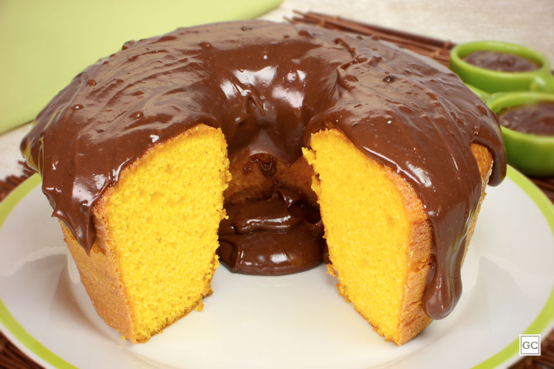

Bolo de cenoura

Ingredientes
- 3 cenouras médias
- 4 ovos
- 1 xícara de óleo
- 2 xícaras de açúcar
- 2 e 1/2 xícaras de farinha de trigo
- 1 colher de fermento em pó
Cobertura
- 1 colher de manteiga
- 3 colheres de chocolate em pó
- 1 xícara de açúcar
- 1/2 xícara de leite
Modo de preparo
- Bata no liquidificador as cenouras, os ovos e o óleo.
- Adicione o açúcar e bata novamente.
- Coloque a mistura em uma tigela e acrescente a farinha de trigo.
- Misture o fermento delicadamente.
- Despeje a massa em uma forma untada.
- Asse em forno preaquecido a 180 graus por aproximadamente 40 minutos.
Cobertura
- Coloque todos os ingredientes da cobertura em uma panela.
- Misture em fogo médio até começar a engrossar.
- Despeje a cobertura sobre o bolo depois de assado.
Voltar ao menu principal